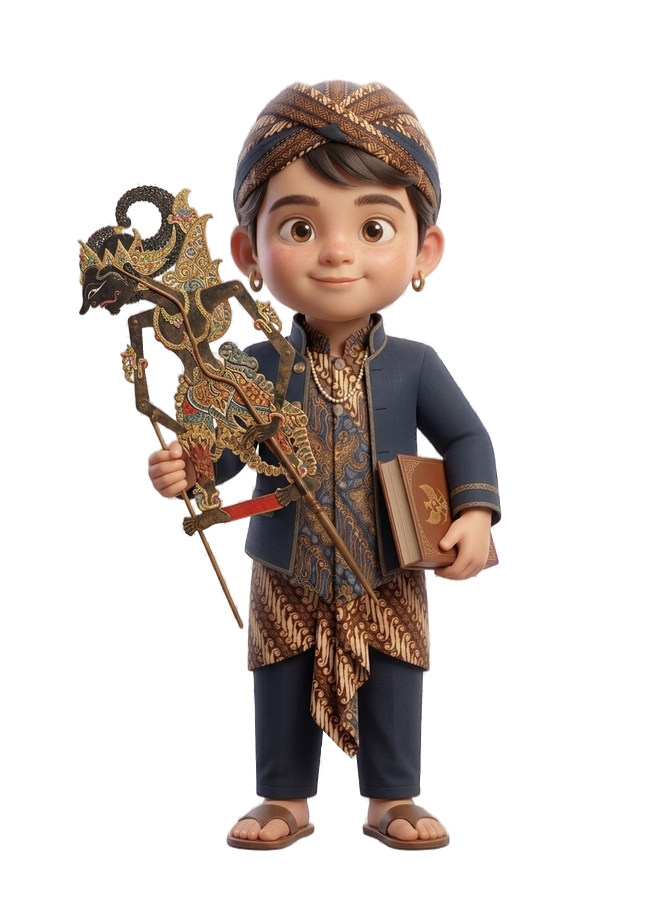
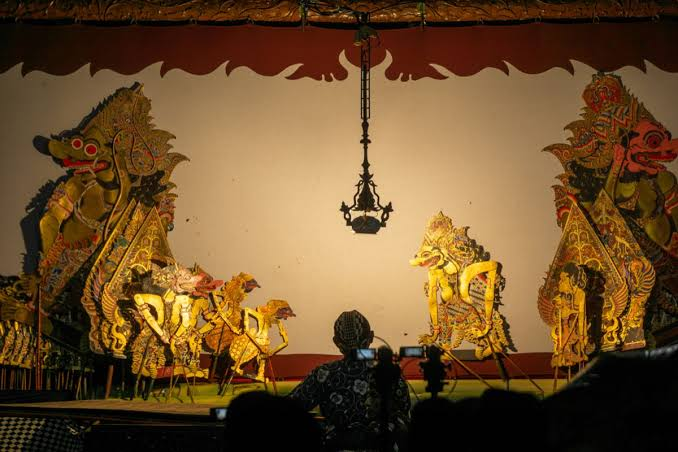
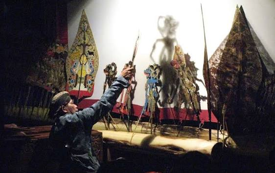

Wayang Kulit merupakan seni pertunjukan tradisional Jawa yang telah diakui dunia. Setiap tokoh dan lakon mengandung filosofi mendalam tentang kebajikan, kepemimpinan, dan perjalanan hidup manusia.


